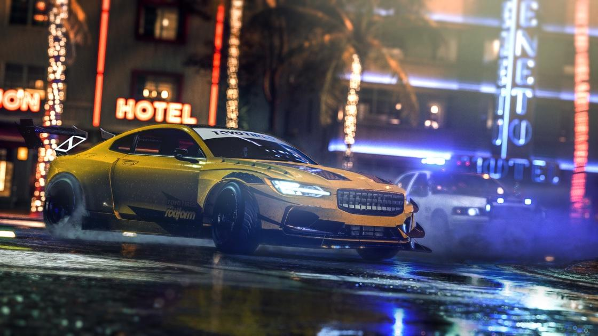

- 

Nuestros valores:
Originalidad: Los productos que ofrece Nintendo son únicos y sorprendentes, todo esto porque desde sus inicios se propuso reinventar el mundo de los juegos de video pero manteniendo su esencia.
Flexibilidad: Cada año que pasa la industria de los videojuegos cambia un poco más, por esa razón, cualquier empresa de esta área debe ser capaz de adaptarse al cambio y de generarlo con ideas innovadoras para no quedarse atrás de la competencia.
En este aspecto, Nintendo es una compañía bastante flexible y por esa razón, se mantiene en la actualidad como uno de los referentes más importantes de la industria e incluso de la historia.
Constancia: Nintendo fué fundada hace más de 130 años, que es tiempo suficiente para que cualquier negocio crezca, alcance mucho éxito y desaparezca de la faz de la tierra por cualquier circunstancia que no pudo manejar, sin embargo, esta empresa es uno de las mejores ejemplos de constancia que existen.
A pesar de que su camino no ha sido nada fácil y su competencia siempre ha sido fuerte, la realidad es que el día de hoy, más de 130 años después de su fundación, Nintendo ha dejado una gran huella en la historia y sigue entre los primeros puestos del top de las mejores empresas desarrolladoras de videojuegos del mundo.